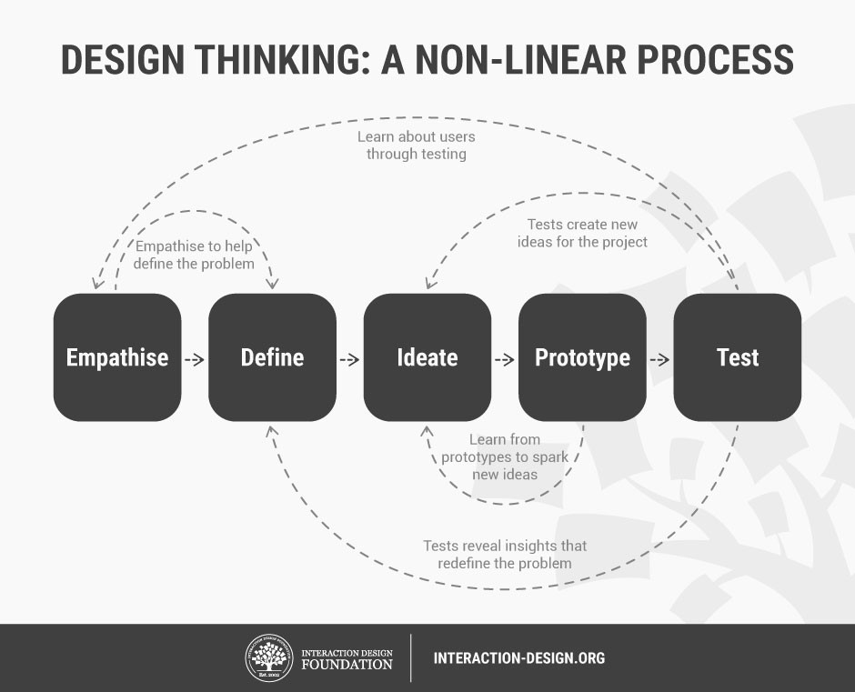
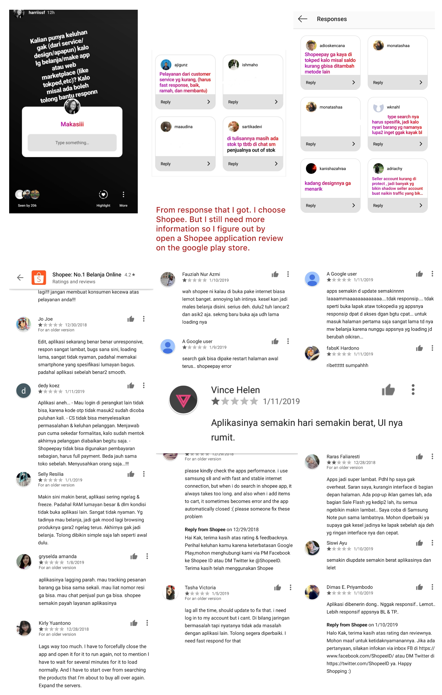
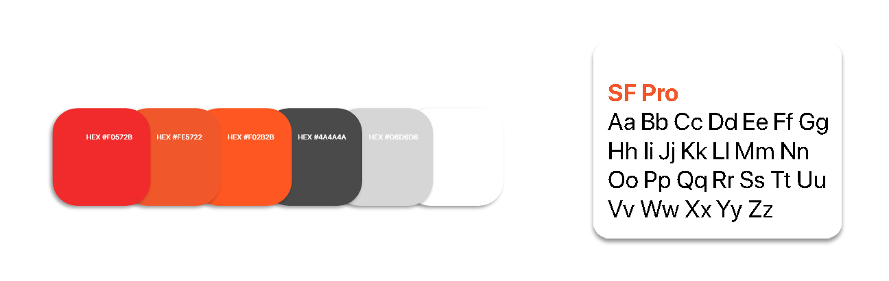
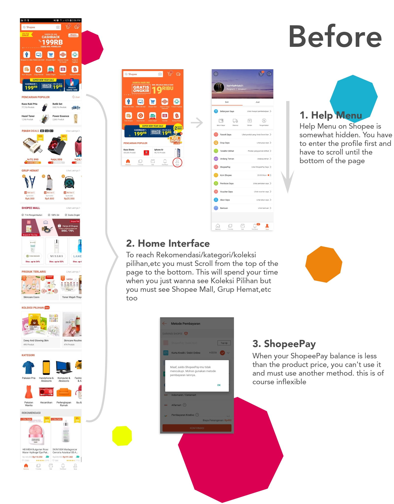
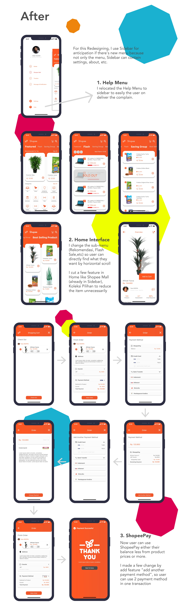
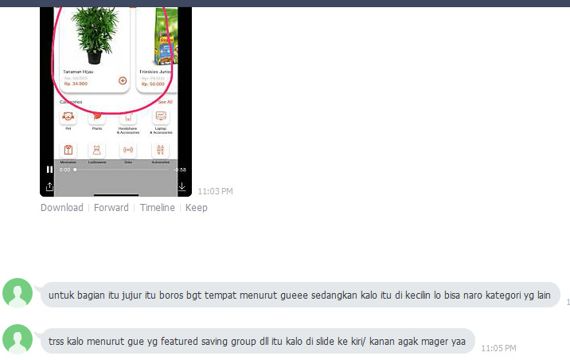
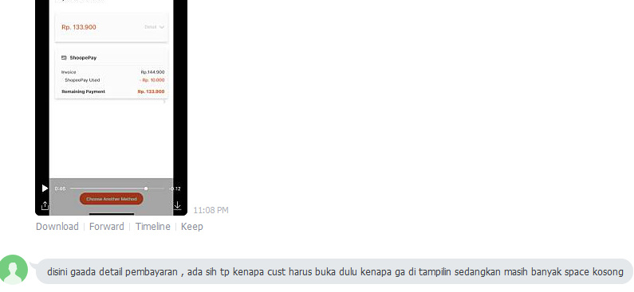

Design Thinking is a design methodology that provides a solution-based approach to solving problems. In essence, the Design Thinking process is iterative, flexible and focused on collaboration between designers and users, with an emphasis on bringing ideas to life based on how real users think, feel and behave.
For example in this case, I was hired by a marketplace startup and were given the autonomy to make any improvement to the digital product. I used the Design Thinking method to analyze the product.
Design Thinking model proposed by the Hasso-Plattner Institute of Design at Stanford (d.school). The five stages of Design Thinking, according to d.school, are as follows: Empathise, Define (the problem), Ideate, Prototype, and Test. Perhaps we would think this method work in linear stage with a logical conclusion. However, in practice, the process maybe will be flexible and non-linear.

1. Empathise
For the first step, before choose the product, I try to empathise the user about marketplace product. Empathise allows designers to set aside their own assumptions in order to gain insight into users and their needs. Then, I take a research on my Instagram account. Information gathered at this stage will be use to the next stage and to develop the best possible understanding of the users, their needs, and the problems.

2. Define
From the users experience, I found a lot of problems from Shopee application. Then I summarized the problem into the big one.
- Users experiences a lagging when opening or using the application
- Users needs an application that has a good interface, simple, and smoothly
- Users needs an effective communication with customer service
- Users needs a flexible payment method
Before enter the third stage of the Design Thinking process (Ideate), I define the problem by asking questions which can help me look for ideas with HMW (How Might We)
- How might we improve the application's performance so it doesn't lag, has a simple interface but still usable?
- How might we improve the users experiences in communication with Customer Service?
- How might we facilitate the users to make a flexible payments?
3. Ideate
After understand the users need and problem, I start the ideate phase. The Idea that I thought is
- Redesigning the Home Interface to make it clean, simple but still usable
- Relocating Help menu to sidebar to easily the users if they have a problem (Shopee had a feature to message CS directly but there’s a lot users still use social media like Twitter/FB as a main feature to contacted CS)
- Add a few change in ShopeePay in Payment Method so the users still can use ShopeePay either the balance less from product prices or more.
4. Prototype
For the next process, I started to create sketch in paper and begin to create high fidelity design of the application.
Color Pallete & Typography
I use Orange as a main color (Shopee primary color) and red for Shopee Mall (based on application). for additional color I use black to text and grey,white as neutral color.
For typography i use SF Pro (default font in iOS. For Icon i got from the template created by Skyler Westby and flaticon

Design


5. Test
From the prototype, an research will be conducted with the users. I take a tests just to my friends. This is one of the results


From the user experience in using a prototype, it will get input to make a better product and make improvements to existing products. From the shortcomings that I know from prototype test, I will iterate, iterate, and iterate again till I got a better products.
“It is about them and for them. The closer the end-users’ needs are analyzed and answered, the more successful the adoption or purchase of a solution. You iterate until you get it right from a customer perspective. This the power of HCD.”